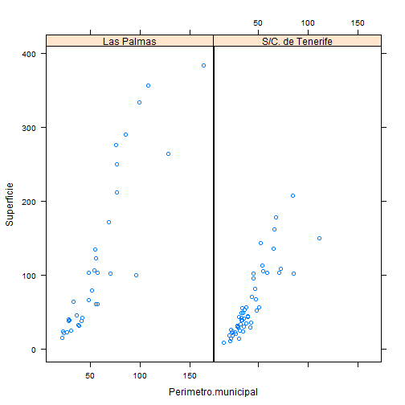

R es un lenguaje de alto nivel y un entorno para la manipulación de datos, cálculo y gráficos.
Interfaz gráfica limitada (aunque se dispone de varios GUI que suplen esta deficiencia desde el punto de vista docente)
No hay soporte comercial
El lenguaje de comandos es un lenguaje de programación
R consta de un sistema base (instalación primaria) pero se pueden extender las funcionalidades mediante librerías o paquetes (se instalan bajo demanda). Algunos de estos paquetes son:
mva: Classical multivariate analysis
maptools: Herramientas para el manejo de objetos geoespaciales
googleVis: Librería que sirve de interfaz entre R y Google chart tools
….
Se puede iniciar una sesión de R en modo terminal (en sistemas Linux) o empleando un R GUI (en sistemas windows).
La interfaz de R para windows proporciona un menú muy básico para gestionar algunos aspectos de sesión de R:
Desde R se pueden realizar sencillas operaciones aritméticas
(4 - 3) * 2/3
sqrt(9)
sin(pi/2)
factorial(3)R ejecuta ciertas operaciones que, en otros programas, podrían generar mensajes de error
1/0
0/0
log(-1)
sqrt(-9)El operador de asignación (<-) permite almacenar valores:
a <- log(10)
a <- log(10)
a = log(10) #¿cual usar: = o <-?
a <- rnorm(4, mean = 10, sd = 1) # en R se utiliza = para asignar valores a los argumentos de las funcionesAl introducir los comandos anteriores, hemos creado un objeto en R: la variable “a”. Este objeto se almacena en una zona de memoria llamada “espacio de trabajo”.
ls()Para invocar la ayuda en R, podemos hacerlo de la forma siguiente
help(rnorm)
`?`(rnorm)
help.search("pc-axis")
help.start()Crear secuencias de vectores
x <- c(1, 2, 3, 4, 5)
y <- c(1:5)
`?`(seq)
# los argumentos con = significa que hay que escribir el nombre los
# argumentos sin = significa que hay que ponerlos en el mismo orden
z <- seq(1, 10, by = 2)
w <- rep(1:5, times = 2)
w <- rep(1:5, each = 3)Operaciones con vectores
2 * x
x + z
x * z
# se pueden sumar vectores de distinta longitud pero se produce un efecto
# cíclico
x + wAlgunas funciones se evalúan sobre un vector y devuelven otro vector de la misma longitud. Otras, en cambio, devuelven un escalar
log(x)
sum(x)
range(x)
length(x)Incluso al evaluar una condición sobre un vector se obtiene un vector
x < 3
x < 3 | z > 5
x < 3 & z < 5Para seleccionar elementos de un vector se utiliza la notación de []:
x <- c(1, 2, 3, 4, 5)
x[3] # elementos de un vector
x[c(1:2)] # partes de un vector
x[1:2] # partes de un vector
x[-1] # quitar partes de un vector
# ¿Cómo seleccionar los elementos de x menores que 2?se pueden modificar los vectores haciendo uso del operador asignación:
x[1:2] <- c(12, 13)
x[1:2] <- 0
x[15] <- 0Los vectores en R son objetos con todos sus elementos del mismo tipo
x <- c(1, 2, 3, 4, 5)
class(x)
x <- c(1, 2, "hola")
class(x)Se pueden asignar nombres a cada componente de un vector
x <- c(1, 2, 3, 4, 5)
names(x) <- c("primero", "segundo", "tercero", "cuarto", "quinto")
attributes(x)
x[2] # accede al elemento nº2
x["segundo"]
x[segundo]Hay funciones que podemos utilizar para verificar si un objeto es o no un vector
is.vector(x)Los factores son vectores que alamcenan datos categóricos (variable con varios niveles)
x <- c("Juan", "Paco", "María", "Arturo")
s <- c("hombre", "hombre", "mujer", "hombre")
s <- factor(s)
attributes(s)
is.factor(s)Las matrices se crean en R utilizando matrix() (bidimensionales) o array() (más de 2 dimensiones)
m <- matrix(1:6, nrow = 3, ncol = 2)
m[1, ]
m[, 2]
attributes(m)
dimnames(m) <- list(c("A", "B", "C"), c("1", "2"))
attributes(m)
is.matrix(m)
m["A", ]
m[, "2"]Las listas en R son colecciones ordenadas de objetos
l <- list(padres = c("Juan", "María"), num.hijos = 2, edad.hijos = c(3, 7))
# observar que se emplea = para asignar los nombres a los objetos y no el
# operador <-
attributes(l)
names(l)
is.list(l)
l[[1]] # accede al objeto nº1
l[["padres"]] # accede al objeto 'padres'
l$padres # accede al objeto 'padres'
l$padres <- c("Juan Pérez", "María González")
l$padres[2]Las hojas de datos en R son matrices de datos formadas por elementos (columnas) de igual longitud (filas). En general, cada columna representa una variable y cada fila una observación.
id <- c(1:6)
sexo <- rep(c("HOMBRE", "MUJER"), each = 3)
edad <- sample(20:60, size = 6, replace = TRUE)
d <- data.frame(id = id, sexo = sexo, edad = edad)
attributes(d)
names(d)
d[[2]]
d[["sexo"]]
d$sexo
class(d$sexo)library() # listar todos los paquetes disponibles en R
install.packages("RJSONIO")
install.packages("ggplot", dependencies = TRUE)
library(RJSONIO) # cargar el paqueteCuando se inicia R, el programa configura por defecto un directorio desde donde se leen o donde se guardan ficheros. Los comandos getwd() y setwd() permiten consultar y cambiar el directorio de trabajo.
getwd()
setwd("C:\\RLibraries")Si queremos cargar un conjunto de datos desde un archivo situado en el directorio de trabajo, lo podemos hacer mediante el comando read.table()
# cargar los datos utilizando read.table (en local)
setwd("C:\\RLibraries")
data.espacios.nat <- read.table(file = "superficie_espacios_naturales.txt",
header = T, sep = ";")
data.geo.municipios <- read.table(file = "datos_geograficos_islas.txt", header = T,
sep = ";")Se puede utilizar read.table() para cargar datos desde un lugar remoto:
# cargar los datos utilizando la función url() (en remoto, por http://)
data.url <- "http://dl.dropbox.com/u/17677514/datos_geograficos_islas.txt"
data.geo.municipios <- read.table(file = url(data.url), header = T, sep = ";")# cargar los datos utilizando la función url() (en remoto, por https://)
data.url <- "https://raw.github.com/cpgonzal/cursoR/gh-pages/data/datos_geograficos_islas.txt"
library(RCurl)
data.geo.municipios <- read.table(textConnection(getURL(data.url, ssl.verifypeer = FALSE)),
header = T, sep = ";")Podemos completar los data.frames con más variables:
# crear factores con etiquetas
data.geo.municipios$Isla <- factor(data.geo.municipios$Isla, levels = c("El Hierro",
"La Palma", "La Gomera", "Tenerife", "Gran Canaria", "Fuerteventura", "Lanzarote"))
data.geo.municipios$Provincia <- c(rep("Las Palmas", 34), rep("S/C. de Tenerife",
54))También podemos crear data.frames con información resumida:
# resumir datos from data frames
data.geo.islas <- aggregate(data.geo.municipios[, c(3, 5)], by = list(Provincia = data.geo.municipios$Provincia,
Isla = data.geo.municipios$Isla), FUN = sum, na.rm = T)
data.geo.islas$Altitud <- aggregate(data.geo.municipios[, 6], by = list(Provincia = data.geo.municipios$Provincia,
Isla = data.geo.municipios$Isla), FUN = max, na.rm = T)[, 3]
# estructura de los datos
str(data.geo.islas)## 'data.frame': 7 obs. of 5 variables:
## $ Provincia : chr "S/C. de Tenerife" "S/C. de Tenerife" "S/C. de Tenerife" "S/C. de Tenerife" ...
## $ Isla : Factor w/ 7 levels "El Hierro","La Palma",..: 1 2 3 4 5 6 7
## $ Superficie : num 269 708 370 2034 1560 ...
## $ Longitud.costa: num 41 155.6 97.5 358 242.9 ...
## $ Altitud : int 571 722 810 1400 1270 395 305Para cargar datos en formato JSON:
# read en JSON format
library(RJSONIO)
data.url <- "http://www.gobiernodecanarias.org/istac/jaxi-istac/tabla.do?accion=jsonMtd&uuidConsulta=7db99ff7-4aab-4a57-a378-fc472aecaeb6"
data.json <- paste(readLines(data.url, encoding = "UTF-8")[1], collapse = "")## Warning: incomplete final line found on
## 'http://www.gobiernodecanarias.org/istac/jaxi-istac/tabla.do?accion=jsonMtd&uuidConsulta=7db99ff7-4aab-4a57-a378-fc472aecaeb6'data.json <- fromJSON(data.json, encoding = "UTF-8")Para consultar la estructura que se ha cargado:
# consultar la estructura que se ha cargado
attributes(data.json)
data.json$categories
length(data.json$data)
head(data.json$data)
data.json$data[[1]]
data.json$data[[1]]$dimCodes[1]Si tenemos problemas en la carga de datos desde el servicio web, lo podemos hacer de otra forma:
data.url <- "http://dl.dropboxusercontent.com/u/17677514/datos_poblacion_municipios.json"
data.json <- paste(readLines(data.url, encoding = "UTF-8")[1], collapse = "")## Warning: incomplete final line found on
## 'http://dl.dropboxusercontent.com/u/17677514/datos_poblacion_municipios.json'data.json <- fromJSON(data.json, encoding = "UTF-8")Si tenemos problemas en la carga de datos desde el servicio web, lo podemos hacer de otra forma:
data.url <- "http://dl.dropboxusercontent.com/u/17677514/datos_poblacion_municipios.json"
data.json <- paste(readLines(data.url, encoding = "UTF-8")[1], collapse = "")## Warning: incomplete final line found on
## 'http://dl.dropboxusercontent.com/u/17677514/datos_poblacion_municipios.json'data.json <- fromJSON(data.json, encoding = "UTF-8")# pasamos los datos a una estructura temporal manejable
tmp.json <- do.call(rbind, data.json$data)
tmp.json.valores <- unlist(tmp.json[, 1])
tmp.json.cod <- tmp.json[, 2]
# creamos un data.frame para trabajar los datos
data.from.json <- data.frame(matrix(ncol = 4, nrow = 4992))
names(data.from.json) <- c("CodMunicipio", "CodAnio", "CodIndicador", "Valor")
for (i in 1:4992) {
data.from.json$CodMunicipio[i] <- tmp.json.cod[[i]][1]
data.from.json$CodAnio[i] <- tmp.json.cod[[i]][2]
data.from.json$CodIndicador[i] <- tmp.json.cod[[i]][3]
data.from.json$Valor[i] <- as.numeric(tmp.json.valores[[i]])
}
rm(tmp.json, tmp.json.valores, tmp.json.cod)# asociamos los códigos a sus valores descriptivos
idx <- match(data.from.json$CodMunicipio, data.json$categories[[1]]$codes)
data.from.json$Municipio <- data.json$categories[[1]]$labels[idx]
idx <- match(data.from.json$CodAnio, data.json$categories[[2]]$codes)
data.from.json$Anio <- data.json$categories[[2]]$labels[idx]
idx <- match(data.from.json$CodIndicador, data.json$categories[[3]]$codes)
data.from.json$Indicador <- data.json$categories[[3]]$labels[idx]
# reordenamos convenientemente las variables
data.pob.municipios <- data.from.json[, c(1, 5, 2, 6, 3, 7, 4)]Para cargar datos en formato PC-AXIS:
library(pxR)
data.url <- "http://www.gobiernodecanarias.org/istac/jaxi-istac/descarga.do?uripx=urn:uuid:d73bd9de-e6ed-4821-808a-616b34df9655"
data.px <- read.px(data.url)
head(data.px)
data.px$VALUES
data.px$CODES
data.from.px <- as.data.frame(data.px)
names(data.from.px) <- c("Indicadores", "Años", "Municipios", "Valor")plot(data.geo.municipios$Superficie, data.geo.municipios$Perímetro.municipal)
plot(Superficie ~ Perímetro.municipal, data = data.geo.municipios)
plot(Superficie ~ 1, data = data.geo.municipios, type = "h")
plot(Superficie ~ 1, data = data.geo.municipios, type = "s")
plot(Superficie ~ Perímetro.municipal, data = data.geo.municipios, xlab = "Perímetro del municipio (km)",
ylab = "Superficie (km. cuadrados)", main = "Comparación del perímetro y la superficie de los municipios")
# plot(1:25,1:25,pch=1:25)
par.plot <- par(pch = 20, col = "blue", mfrow = c(2, 1))
plot(Superficie ~ Perímetro.municipal, data = data.geo.municipios)
plot(Superficie ~ Altitud, data = data.geo.municipios)
# plot(1:25,1:25,pch=1:25)
par.plot <- par(pch = 20, col = "blue", mfrow = c(2, 1))
plot(Superficie ~ Perímetro.municipal, data = data.geo.municipios)
plot(Superficie ~ Altitud, data = data.geo.municipios)
data.geo.municipios$Provincia <- as.factor(data.geo.municipios$Provincia)
plot.colors <- c("green", "orange")
plot(Superficie ~ Perímetro.municipal, data = data.geo.municipios, col = plot.colors[data.geo.municipios$Provincia],
pch = 20)
legend("topleft", legend = levels(data.geo.municipios$Provincia), col = c("green",
"orange"), pch = rep(20, 2))
Podemos conseguir un cierto grado de personalización en los gráficos en R. Los gráficos de panel (trellis graphics) permiten representar visualizaciones por grupos:
library(lattice)
histogram(~Superficie | Provincia, data = data.geo.municipios)
densityplot(~Superficie | Provincia, data = data.geo.municipios)
bwplot(Superficie ~ Provincia, data = data.geo.municipios)
xyplot(Superficie ~ Perímetro.municipal | Provincia, data = data.geo.municipios)
Es posible programar funciones personalizadas en R:
myfunction <- function(x) {
resumen <- summary(x)
return(resumen)
}
myfunction(data.pob.municipios)El EUSTAT tiene algunos ejemplos de programaciones sencillas con R:
http://www.eustat.es/documentos/datos/CT_Visualizacion_de_datos_en_las_Estadisticas_Oficiales_c.pdf